从「文件」导入
Import from Files
选择文件或文件夹，扫描后整批导入相册；照片、视频和实况照片都能识别。
Pick files or a folder, scan, and import the whole batch into Photos—including videos and Live Photos.
从「文件」导入照片、视频和实况照片，或把相册导出到任意文件夹。进度会同步显示在 App、锁屏和灵动岛；实况照片自动配对，重复文件可以跳过。
Import photos, videos, and Live Photos from Files, or export your library to any folder. Follow every item in the app, on the Lock Screen, and in the Dynamic Island—with Live Photos paired and duplicates skipped.
不需要账号，也不需要上传服务器。每次导入和导出都可以暂停、停止或恢复；结束后会给出成功、跳过和失败的结果。
No account and no upload server. Pause, stop, or resume a transfer, and see exactly what succeeded, what was skipped, and what failed.
选择文件或文件夹，扫描后整批导入相册；照片、视频和实况照片都能识别。
Pick files or a folder, scan, and import the whole batch into Photos—including videos and Live Photos.
每次导出单独选择目标文件夹，也可以按年 / 月创建子目录。
Choose a destination for every export, with optional year / month subfolders.
导入导出进度同步显示在锁屏和灵动岛，不用一直停留在 App 里。
Import and export progress stays visible on the Lock Screen and in the Dynamic Island.
匹配的照片与 MOV 会识别并导入为一个实况照片，不会拆成两张。
Matching stills and MOV files are recognized and imported as one Live Photo—not two separate items.
查看完成、跳过和失败的项目；传输过程中可以暂停或停止。
See succeeded, skipped, and failed items, and pause or stop a transfer while it runs.
目标位置已有的文件可以跳过；重复导出不会产生重复副本。
Skip files already in the destination, so repeat exports stay clean.
新版还加入了照片地图：按地点聚合照片，支持探索与卫星图层、高级检索和媒体信息卡。
Also new: a photo map with Explore and Satellite views, advanced photo search, and a media info card with location.
订阅 Pro 解锁无限导出，也可以按需购买导出额度。免费下载后即可浏览相册、探索地图并查看媒体信息。
Subscribe to Pro for unlimited exports, or buy export credits as you need them. The app is free to download—start by browsing, exploring the map, and checking media info.
Pro 订阅解锁无限导出，不再按次计算额度。
A Pro subscription removes per-export limits.
偶尔整理一次？购买一次性导出额度，用多少买多少。
Only back up occasionally? Buy one-time export credits instead of subscribing.
额度仅保存在本机，账号、照片和传输过程都不经过服务器。
Credits stay on this device, and your account, photos, and transfers never go through a server.
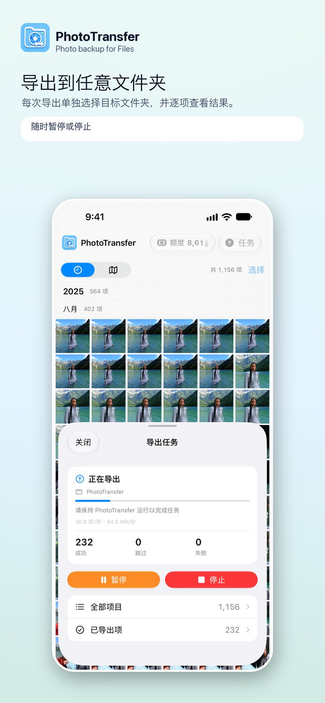
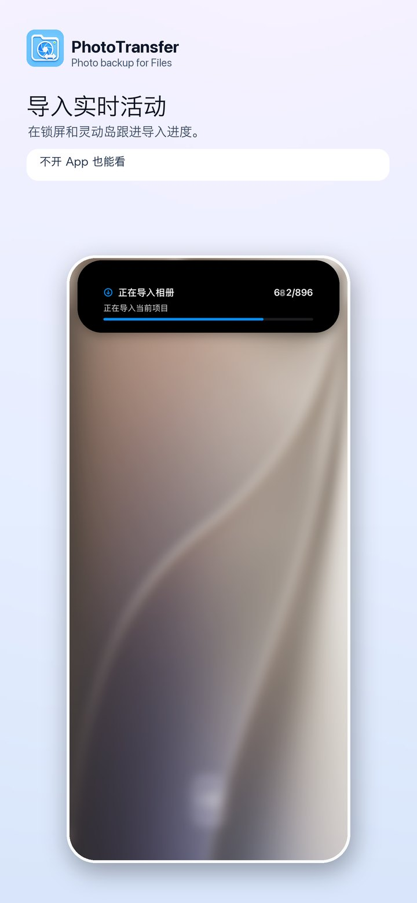
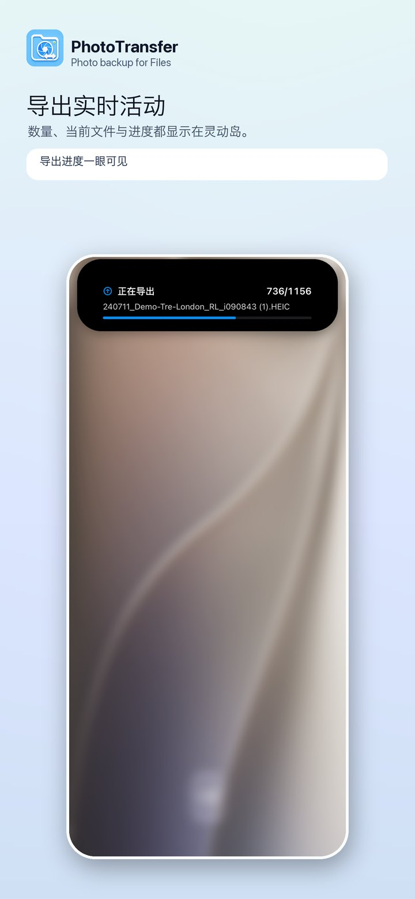
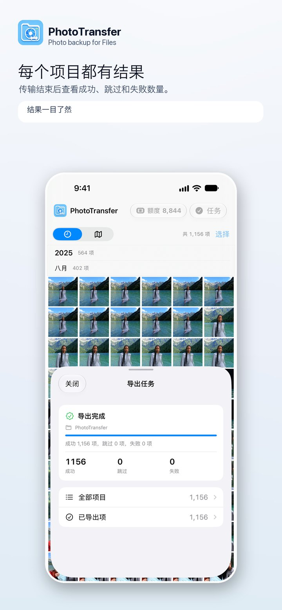
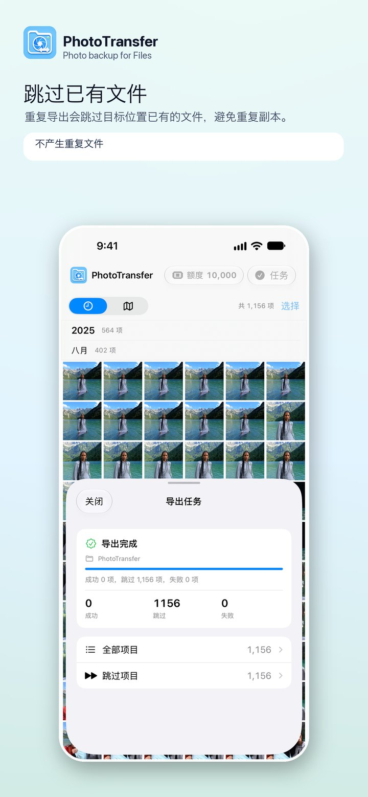
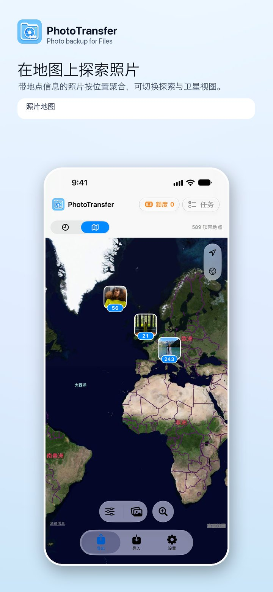
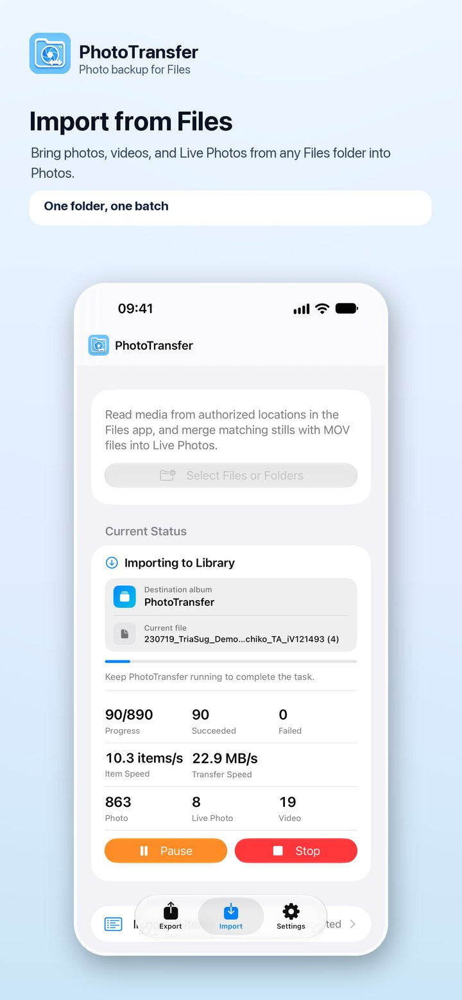
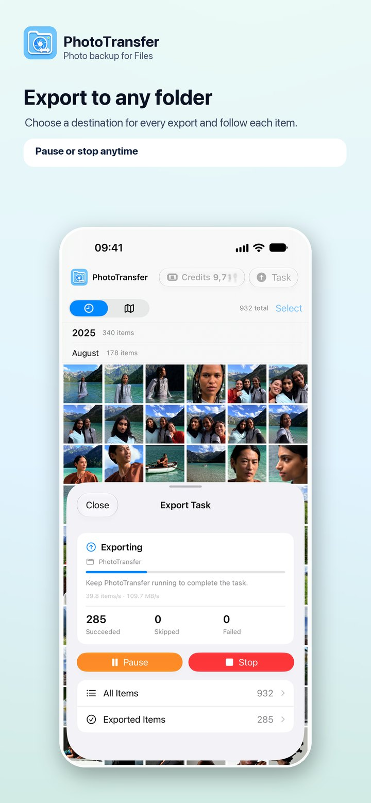
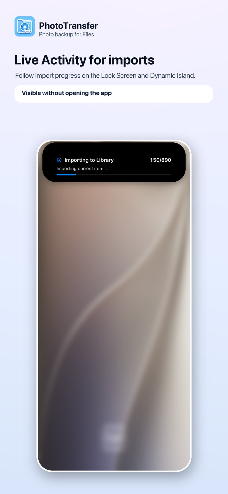
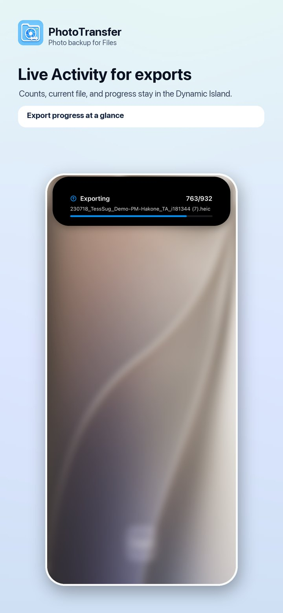
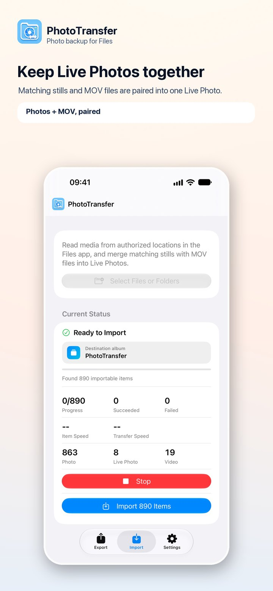
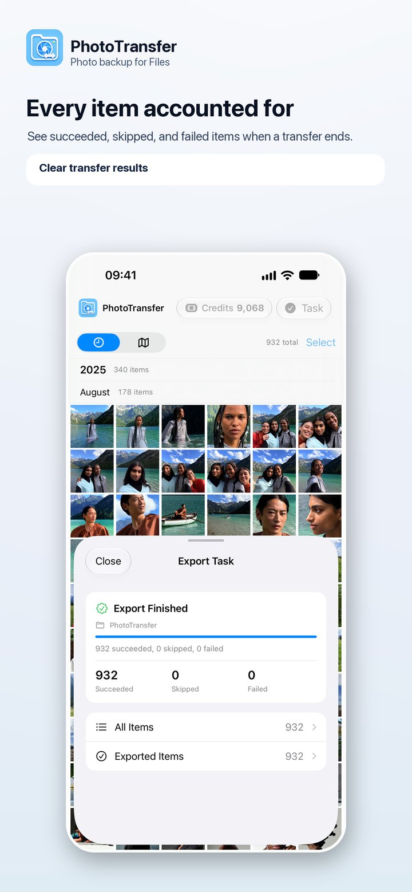
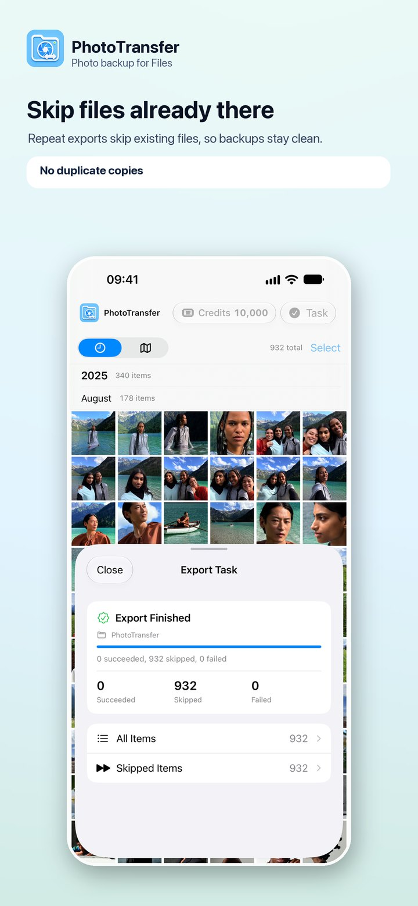
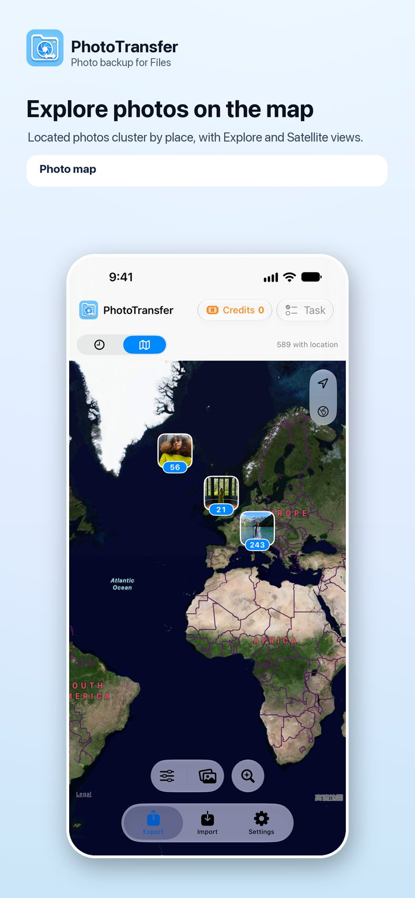